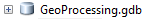
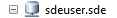

Geodatabases (GDB)
A geodatabase is an alternate way to store GIS information in one large file, which can contain multiple point, polygon, and/or polyline layers. ESRI is pushing the geodatabase idea, because it is a less “messy” way of organizing data than having multiple shapefiles. in multiple folders. While shapefiles are still very popular and commonly available, you may run into geodatabases in your search for useful data. Here are the basics:
- Geodatabases often appear as single files with the “.gdb” extension or “.mdb” extension.
- In a GDB, “shapefiles” are referred to as “feature classes.” Otherwise, they perform the same function when you add them as layers to your map in ArcGIS
Usable Geodatabases
- The Master Geodatabase
- Consider the Master GDB to be a broad view of different essential layers used throughout the program.
- The Master Geodatabase should be used to find and use common GIS layers such as Bikeways, Bikeway Signage, and Wayfinding Destinations.
- This Geodatabase should not be used to hold created layers for specific projects (i.e. Clips, Segments, Merges).

- The GeoProcessing GDB contains the more specialized layers.
- This GDB should be used for the unique layers created within different projects.
- Examples of layers within are Bikeway Segments, Street Clips, and other specialized layers.

- This GDB contains all the City managed GIS files.
Reconnecting Data to MXD
Now that much of the data has been moved around, you may notice that some of the layers in your MXDs have lost connections.
It will look like this:

To repair the links, you must first navigate to the properties of the missing layer. Then select the Source Tab and click the Set Data Source Button.
From there, navigate to the GDB where you believe your missing layer is, click on the layer's link, and then click OK.
The layer will now be reconnected.